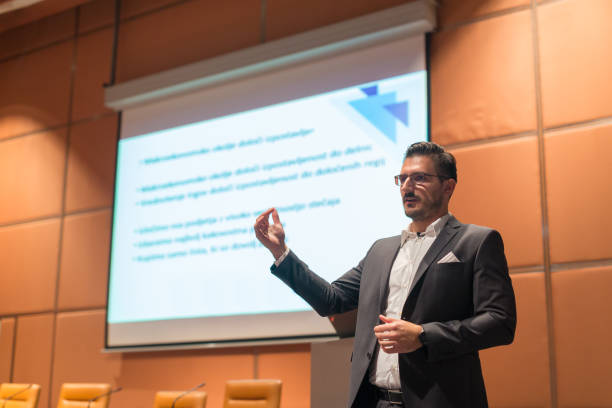

Marc Vidal
Economista especialitzat en digitalització i models productius circulars en l'àmbit industrial.

Economista especialitzat en digitalització i models productius circulars en l'àmbit industrial.
Consultora en estratègies de negoci circular i coordinadora de projectes de simbiosi industrial.
Expert en logística inversa i sistemes de gestió eficient de recursos en empreses manufactureres.
Professora d'economia aplicada centrada en la transició cap a models de producció circulars.
Dissenyador industrial amb focus en models de producte-servici i optimització del cicle de vida.
Emprenedora en l'àmbit del recondicionament de productes i nous canals de valorització.
Més ponents s’anunciaran properament.